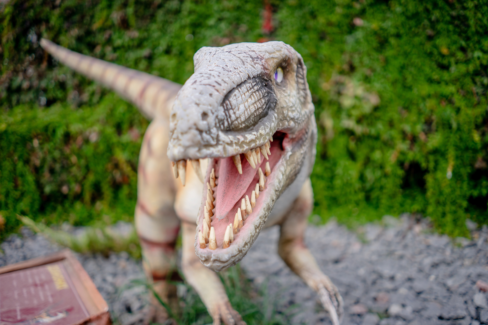

Overview
Dinosaurs are one of the oldest animals known to modern day society. More specifically, the Tyrannosaurus Rex, better known as the T-Rex, was one of the most ferocious dinosaurs that people know to this day. A huge animal standing at 12 feet tall and weighing up to 15,500 pounds. These large animals who lived over 67 million years ago during the Late Cretaceous era and only were expected to live around 28 years. The T-Rex has an over sized head and a powerful tail, yet teeny tiny arms. These vicious creatures are born from an egg where the survival rate is not very high. They lived in forests and in areas that were open. The T-Rex is expected to have only lived in North America and Asia and the first fossils were found in Hell Creek, Montana. [1]
Identification
The T-Rex is identified by its over sized head with forward facing eyes. Its huge muscular jaw that is used for chomping down on any prey. The T-Rex also has very robust serrated teeth all while having a powerful tail yet tiny arms.

Lived during the Late Cretaceous era around 66-90 million years ago along with the Albertosaurus, Thyreophora and Nedoceratops. This is known because of their position in the ground when their fossils are found.
The person who discovered the T-Rex fossil for the very first time is Hunter Barum Brown in 1902.

Lifestyle
Life History Cycle
The T-Rex is believed to have been born from an egg. The survival rate of these baby dino eggs is not very high. However, if the baby T-Rex were to live, it is estimated the T-Rex would add around 4.6 pounds every day during a 14 year cycle. Once the T-Rex is matured and is no longer an adolescent the T-Rex should be the size of 40 feet long, 12 feet high and should weigh around 9 tons by 15-20 years old.
Habitats
The T-Rex is believed to have lived in forests. They also may have lived near rivers and in areas that were very open. This is so that the T-Rex had a large pool of prey to pick from. It is believed that they lived in areas where it was humid as well as near coastal swamps.
Feeding & Diet
These large dinosaurs are well-known to have been carnivores but are also believed to have been opportunistic scavengers. The T-Rex would add 4.6 pounds every day for 14 years and to keep up, the T-Rex would bring down large dinosaurs like the herbivores Edmontosaurus and triceratops as well as other tyrannosaurs.
Behaviors & Adaptations
The T-Rex is notorious for being one of the most vicious creatures to walk on earth. Its species is known for being primarily a predator and is very adept at using its keen sense of smell to find its prey. It is suspected that the T-Rex would fight/socialize with others of its kind based on the bite marks and tooth wear patterns in the fossils.
Communication
Though these ferocious creatures were fierce to their prey, to many’s surprise they did not communicate with roars. Instead these fierce creatures communicated with each other using coos and mumbles. Researchers came to this conclusion after researching the T-Rex’s closest relatives, archosaurs (birds and crocodiles).
Predators
It is widely believed that the T-Rex was the Apex Predator in its ecosystem. This means that researchers believe that it was not common for other animals to attempt to hunt these vicious creatures. However, There is evidence that supports the idea that the T-Rex species were occasionally cannibalistic. This is because there are fossils with bite marks from what seems to be from other T-Rex’s. Nothing can be for certain but there is little to no evidence suggesting that there were other animals who successfully hunted the T-Rex.
Distribution
The T-Rex is estimated to have lived in 2 main different regions, North America and Asia. This creature and its ancestors is believed to have originated in North America on the continent of Laramidia. Researchers believe that the reason why the T-Rex was able to end up in Asia during this time is because back then, the Pacific ocean was not as wide and the two continents were closer together.
Fossils
The first pieces of skeletal evidence of a T-Rex were found by Hunter Barum Brown in 1902. Barum Brown was a Paleontologist in Montana where he found the T-Rex fossils in Hell Creek, Montana. Different pieces of the fossil were discovered during 1902 including the hips and teeth of the T-Rex. Later in 1988 a fossil hunter named Kathy Wankel stumbled upon a full skeletal fossil in Montana of the T-Rex and it now resides in Montanas Museum of Rockies.